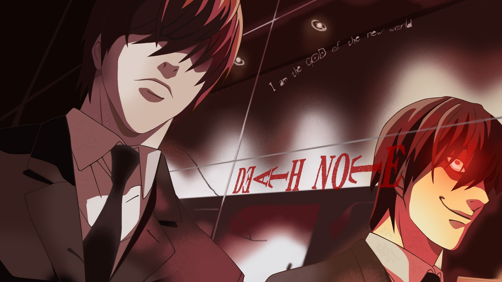
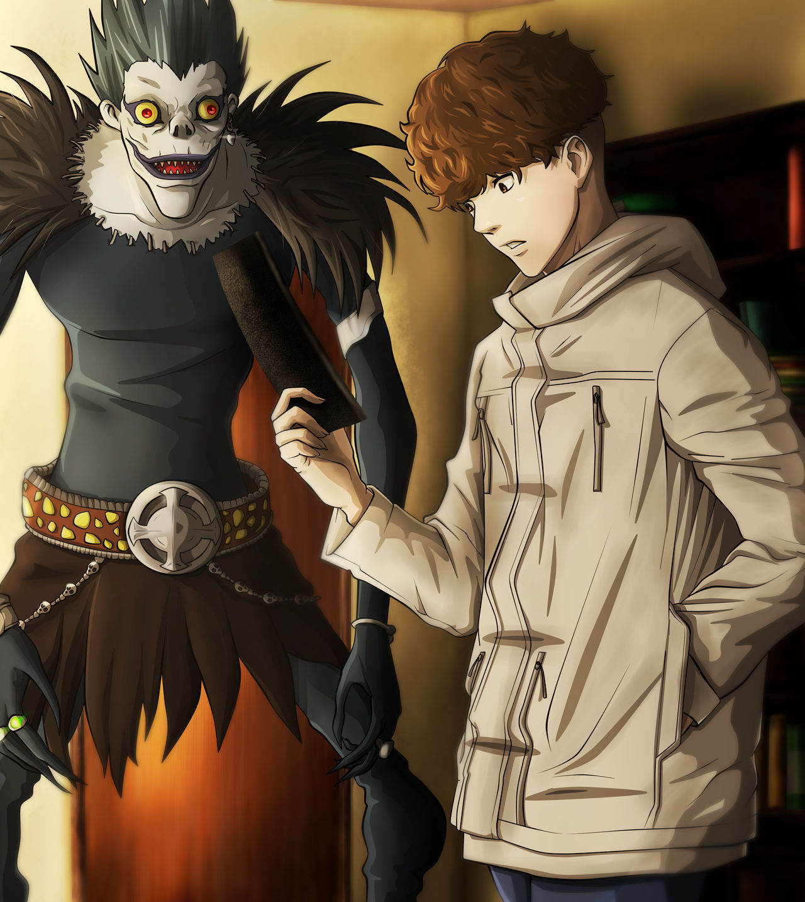

Death Note: qual o significado?
Death Note é uma série de anime cheia de esquemas, planos mirabolantes e batalhas mentais. Ryuk desce ao mundo humano para comer maçãs e assistir ao caos instaurado, avisando que quem usasse o caderno cairia em desgraça.
Light começa a viver em função do caderno da morte que encontrou. Todos os seus passos são premeditados e ele vai perdendo a sua humanidade, a ponto de não se importar com a morte do próprio pai.
Será que existe um fundo de justiça ou moralidade nas ações de Kira? O protagonista acredita que os seus crimes são justificados, que está matando como se cometesse um sacrifício pelo bem comum:
Light Sabia que matar era um crime, Mas para ele era a forma de corrigir as coisas...
Quando é derrotado por Near, Kira alega que conseguiu diminuir drasticamente a violência e até interromper guerras internacionais, graças às suas ações.
No entanto, mesmo que as suas intenções fossem verdadeiras, o protagonista foi dominado pela megalomania e pela sede de poder: o seu objetivo derradeiro era se tornar um deus.
Assim, no confronto final, Near aponta Light como um "mero assassino" que se deparou com a arma mais mortífera da humanidade e foi corrompido por ela.
Death Note 2: o one-shot de 2020
Depois de 14 anos, Death Note regressou no formato mangá, composto por 89 páginas. O one-shot Death Note 2 foi lançado em fevereiro de 2020 e conta com o regresso de personagens marcantes como o Shinigami Ryuk, desta vez comandado por Tanaka Nomura, um estudante que fica conhecido como "A-Kira"